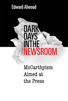

<body bgcolor="#FFFFFF" text="#000000" link="#0000FF" vlink="#CC0000" alink="#CC0000"><center><hr width="350" size="1" align="center" noshade>Shines a new light on a dark era in American journalism<hr width="350" size="1" align="center" noshade><p><a href="https://cdcshoppingcart.uchicago.edu/Cart/ChicagoBook.aspx?ISBN=9781592133413&&PRESS=temple" target="_top">Buy this book!</a> | <a href="https://cdcshoppingcart.uchicago.edu/Cart/Cart.aspx?PRESS=temple" target="_top">View Cart</a> | <a href="https://cdcshoppingcart.uchicago.edu/Cart/Cart.aspx?PRESS=temple" target="_top">Check Out</a></p><p></p></center><!--none//--><h1>Dark Days in the Newsroom</h1>
<H2>McCarthyism Aimed at the Press</H2>
<h3>Edward Alwood</h3>
<P>cloth 159213341X $75.50, Jun 07, <FONT COLOR=#990033>Available</FONT>
<br>paper 1592133428 $29.95, Jun 07, <FONT COLOR=#990033>Available</FONT>
<br>Electronic Book 1592133436 $29.95 <FONT COLOR=#990033>Available</FONT>
<BR> 216 pp
5.5x8.25
</P><h3 align="center"><P><font color="#996633">Winner of the national Tankard Book Award from the Association for Education in Journalism and Mass Communication,
2008</font></P>
<P><font color="#996633">Named Best Book of the Year: Adult
Non-Fiction by the Connecticut Press Club,
2008</font></P>
</H3>
<BLOCKQUOTE><I>"</i>Dark Days in the Newsroom<i> is an excellent book. There are not many books about McCarthyism and the journalists, making Alwood's treatment of the topic very interesting and useful. I think this is going to be a valuable addition to the books on the subject and an important component to a journalism students' library."</i>
<br><b>&#151Jarice Hanson</b>, Professor of Communication, University of Massachusetts, Amherst</I></BLOCKQUOTE>
<p>
<i>Dark Days in the Newsroom</i> traces how journalists became radicalized during the Depression era, only to become targets of Senator Joseph McCarthy and like-minded anti-Communist crusaders during the 1950s. Edward Alwood, a former news correspondent, describes this remarkable story of conflict, principle, and personal sacrifice with noticeable �lan. He shows how McCarthy's minions pried inside newsrooms thought to be sacrosanct under the First Amendment, and details how some journalists mounted a heroic defense of freedom of the press while others secretly enlisted in the government's anti-communist crusade.
<p>
Relying on previously undisclosed documents from FBI files along with personal interviews, Alwood provides a richly informed commentary on one of the most significant moments in the history of American journalism. Arguing that the experiences of the McCarthy years profoundly influenced the practice of journalism, he shows how many of the issues faced by journalists in the 1950s prefigure today's conflicts over the right of journalists to protect their sources.
<BR>&nbsp;<h2>Excerpt</h2><P>Excerpt available at <a href="http://www.temple.edu/tempress">www.temple.edu/tempress</a></p>
<BR>&nbsp;<h2>Reviews</h2>
<p><i>"An important, detailed examination of a 1950s journalistic crisis too easily forgotten in today's world. Yet, there are significant parallels here with current events in journalism.."</i>
<br><b>&#151Gene Roberts</b>, Professor of Journalism, University of Maryland
<p><i>"This book is particularly evocative as the nation faces a debate about national security and press freedom."</i> <br>&#151;<b><i>Booklist</i></b>
<p><i>"This is a fascinating and detailed look at one aspect of the McCarthy era that continues to influence contemporary journalism."
</i><br>&#151;<b><i>Library Journal</i></b>
<p><i>"Edward Alwood�s </i>Dark Days in the Newsroom: McCarthyism Aimed at the Press<i>, [is] another acute examination of how the press �again with so few exceptions�rolled over when Joe McCarthy, HUAC, Hoover�s FBI and other opportunistic knaves hounded and assailed everyone they claimed without evidence was promoting Communism in this country." </i> <br>&#151;<b><i>History News Network</i></b>
<p><i> "As fascinating a historical look as </i>Dark Days in the Newsroom<i> provides, Alwood�s contention is that this isn�t just a closed chapter."
</i> <br>&#151;<b><i><a href="http://newsguild.org/gr/index.php?ID=4417" target="new">The Guild Reporter</a></i></b>
<p><i>"It is hard to conceptualize the tensions and fears of this era a half century later, but Alwood has done well."</i> <br>&#151;<b><i>Communication Booknotes Quarterly</i></b>
<p><i>"Writing a blurb for this book would be a snap: �Every serious journalist should read this fascinating, superbly researched, thoroughly documented, and invaluable historical account of a frightening, sustained and vicious assault on robust journalism�an assault that has great resonance today,� is what I�d say�For those not old enough to have lived through this time in our nation�s history, having the chance this book gives to absorb its valuable lessons is a gift worth sampling."</i> <br>&#151;<b><i>Nieman Reports</i></b>
<p><i>"The strongest aspect of the book is the portrait of ruined lives�.Alwood�s book poignantly suggests how much more these journalists might have contributed, suggesting a history of what could have been, against a backdrop of the decline of American newspapers, as a younger generation of journalists shaped by technology looked upon the Newspaper Guild and its aging membership as a relic. Using the plight of Judith Miller as a reminder, however, Alwood shows the ongoing role of journalists in defending the First Amendment against government intrusion."</i> <br>&#151;<b><i>American Journalism</i></b>
<p><i>"[T]he author demands above the fold placement for a story long buried in the back pages�Alwood has a good eye for the human interest sidebar featuring forgotten heroes, sniveling opportunists, compromised characters, and collateral damage�[a] crisp and informative study."</i> <br>&#151;<b><i>The Journal of American History</i></b>
<p><i>"[This] easy-to-read work is an excellent reminder of what can happen if we doze at our journalistic posts, if we lose sight of the fact that the best protection for a free press is itself, and of an instance in history�sadly, one of many�when mob mentality trumped reason and law."</i> <br>&#151;<b><i>Journalism & Mass Communication Quarterly</i></b>
<p><i>"[T]his is a valuable, thorough study of the anti-Communist purge of the press."
/i> <br>&#151;<b><i>Journalism History</i></b>
<p><i>"[W]hat Alwood does demonstrate very effectively�is that the �dark days in the newsroom� were caused more by frightened journalists, craven newspaper publishers, and short-sighted labor union leaders than they were by subpoenas and hectoring congressmen."</i> <br>&#151;<b><i>The Historical Journal of Film, Radio, and Television</i></b>
<p><i>"[A] meticulously researched historical study.... Alwood's [book] makes three significant contributions. First, through a far-reaching and painstaking analysis of FBI records...Alwood brings into the public domain new information on McCarthyism's conspiracy against the press and the FBI's complicity....Second, in providing constitutional context for this analysis, Alwood demonstrates the grave implications of the attacks on journalists' freedom of thought and association....Finally...Alwood reminds us that the Constitution remains a tenuous shield against government assault on civil liberties." </i> <br>&#151;<b><i>American Studies</i></b>
<P><I>"[A]n addition to the ample literature on McCarthyism.... [T]o his credit, [Alwood] has provided more than a tale of professional witnesses, nasty indictments and allegations/counter-allegations. What is more, his work encourages us to think of journalism and journalists as particularly vulnerable to Red Scare investigations and pressures." </i><br><b>&#151American Communist History</b>
<BR>&nbsp;<P><p>Visit Edward Alwood's website at <a href="http://www.edwardalwood.com/"target="new"> www.edwardalwood.com
</a></P><BR>&nbsp;<br>
<h2>Contents</h2><P>
<p>Preface
<br>Introduction
<br>1. Awakening the Newsroom
<br>2. The Communist Connection
<br>3. Prelude to an Investigation
<br>4. Reds in the Newsroom
<br>5. The Specter of McCarthy
<br>6. Dark Clouds over the Newsroom
<br>7. The Investigation
<br>8. Deeper Trouble
<br>9. Journalists and the First Amendment
<br>10. Lessons from the Past
<br>List of Abbreviations
<br>Selected Bibliography
<br>Appendices
</P><BR>&nbsp;<H2>About the Author(s)</H2>
<table><tr><td valign="top"><img src="/tempress/authors/1779_au.gif" height="90" width="75"></td><td width="100%" valign="middle"><p><b>Edward Alwood</b> is Associate Professor of Journalism at Quinnipiac University and former correspondent for CNN. He is the author of <i>Straight News: Gays, Lesbians, and the News Media</i>.</P></td></tr></table>
<BR><H2>Subject Categories</H2>
<p><A HREF="/tempress/mass_media.html" TARGET="_top">Mass Media and Communications</a>
<BR><A HREF="/tempress/american.html" TARGET="_top">American Studies</a>
</p>
<p align="center"><a href="https://cdcshoppingcart.uchicago.edu/Cart/ChicagoBook.aspx?ISBN=9781592133413&&PRESS=temple" target="_top">Buy this book!</a> | <a href="https://cdcshoppingcart.uchicago.edu/Cart/Cart.aspx?PRESS=temple" target="_top">View Cart</a> | <a href="https://cdcshoppingcart.uchicago.edu/Cart/Cart.aspx?PRESS=temple" target="_top">Check Out</a></p><p><font face="Arial" size="1"><a href="copyright.html" onMouseOver="window.status='Web Copyright Policy';return true;" onMouseOut="window.status=''" title="Web Copyright Policy">&copy;</a> 2015 <a href="http://www.temple.edu" target="new" onMouseOver="window.status='Link to Temple University home page';return true;" onMouseOut="window.status=''" title="Link to Temple University home page">Temple University</a>. All Rights Reserved. http://www.temple.edu/tempress/titles/1779_reg.html</font></p>